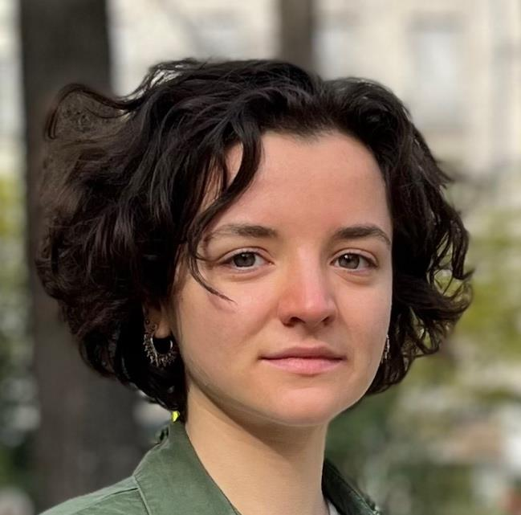

Lucie Ricq
Deputy Head of the FIPU4 unit (public finance analysis), Directorate General of the Treasury
Civil servant (ITPE corps) · PhD candidate at CIRED, supervised by Philippe Quirion and Laurent Lamy (doctoral school: ENPC)
Doctoral research
Prospective optimisation of the energy system and its financing mechanisms under sector coupling
Modelling of a long-term partial equilibrium with risk-averse investors (effects on the energy mix and on social welfare). Assessment of long-term contracts (mitigation of perceived risk and reduction of investment distortions).
Disciplines: economics, applied mathematics.
Experience
- 2026 –Deputy Head of Unit, FIPU4Directorate General of the Treasury (DG Trésor), public finance analysis
- 2025LecturerENSTA — Introduction to electricity markets
- 2023Research internCIRED, 6 months
Impacts of electric-vehicle flexibility on the European energy system - 2022Research internLUT University, Finland, 6 months
Sustainability of BECCS - 2021Research internNavier laboratory, ENPC, 2 months
LCA and material properties - 2020Research collaboration (TIPE)IFREMER centre
Sampling diatoms at sea; observation and counting under the microscope - 2018Research collaboration (TPE)INRIA laboratory
Design of soft robots
Education
- 2023 – 2026PhD in economics and applied mathematicsCIRED, Nogent-sur-Marne
- 2023 – 2025MSc “Energy system analysis”DTU, Copenhagen
- 2022 – 2023Master 2 EEETUniversité Lumière Lyon 2
- 2020 – 2023Engineering degreeENTPE, Lyon
- 2021 – 2022Public policy studiesSciences Po Lyon
- 2020 – 2021Architecture studiesENSAL, Lyon
- 2018 – 2020Classe préparatoire BCPSTLycée Faidherbe, Lille
Skills and degrees
Languages
- French native
- English C1 · TOEIC 965 · TOEFL 98
- Spanish B2
- German A2
Programming
- Python
- Julia / GAMS
- HTML / CSS / JS
- C / C++
Degrees
- Master's in economics 2023
- Engineering degree 2023
- Certificate in public policy studies 2022
- BCPST preparatory class 2020
- Scientific baccalaureate 2018
Beyond work
- Member of Wikipedia (2022–2025) and openmod (2023–2025)
- Member of COP2 étudiante and of the sustainability (DD&RS) committee (2020–2022)
- Founder and president of Enactus ENTPE (2020–2022)
- President of the sustainability club at ENTPE (2021–2022)
- Member of Together for the Planet, Lyon (2021–2022)
- Member of The Shifters, Lyon local group (2021–2022)
The Bercy section gathers small tools built on public sources: a daily public-finance watch, key facts and officials, and Eurostat/Insee series. They are updated automatically every weekday morning.